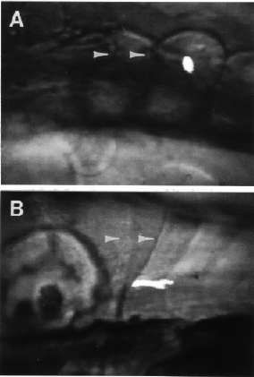

Fig 19. Demonstration with lineage tracer that somite 3 makes myotome 3. The images combine fluorescence due tintracellularly injected rhodamine-dextran and bright field (see Schilling and Kimmel, 1994, for method). The labeled cell in somite 3 (injected with lineage tracer at the 5-somite stage in A) differentiates into an elongated muscle fiber spanning myotome 3 (at the protruding-mouth stage in B). The white arrowheads in both panels show the posterior borders of somites (myotomes) 1 and 2.

Figure 19